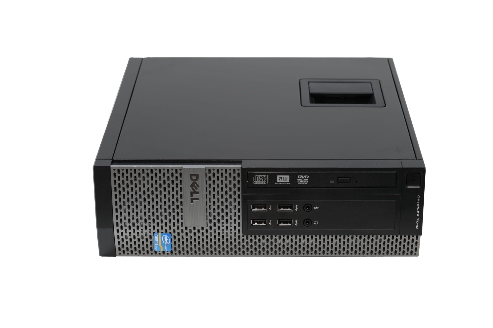
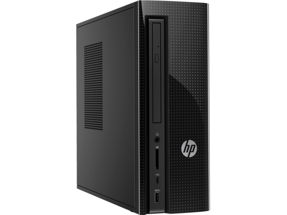
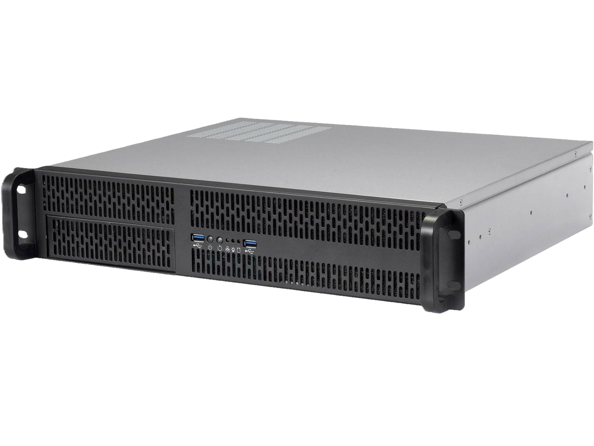
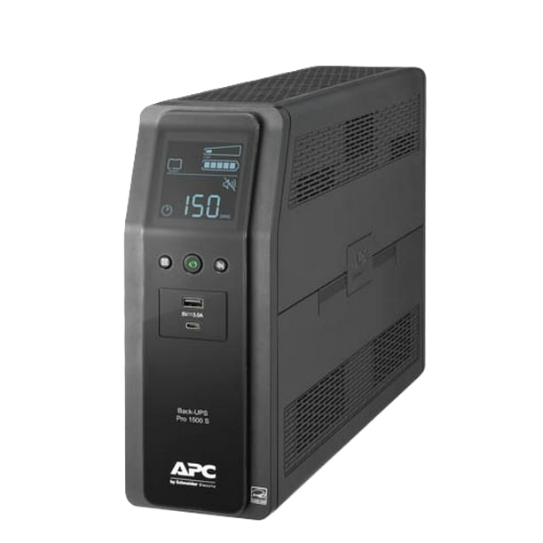

The Synology DS220+
The Synology DS220+
Here is where it all began. This device was the foundation of my homelab journey. I wanted to get a NAS (Network Attached Storage) for two primary reasons, I wanted to save money on monthly subscriptions, and I wanted the benefits of control and privacy that came with hosting things on my own device. By my calculations, at the time, the device could pay for itself in 3 years for the current subscriptions my family and I were paying for (Google photos, Google Drive, and Minecraft server hosting). This system is now saving us money every day.

Dell OptiplexSnagged off of Facebook marketplace with a bonus screen, keyboard, and mouse was my second computer. This champ rocks an i5-3470, built for Windows 7 Professional. I originally ran Windows 10 Pro (for about 2 months) on the device before moving to Proxmox after recognizing the limitations of Windows.

HP SlimlineThis device held the honor of being the family PC until it was retired for a more powerful computer, since one of my siblings took an interest in video editing. I had the privilege to repurpose it as a secondary Proxmox server, where I was able to begin experimenting with clustered systems and high availability.

Custom BuildOnce the combined 28 GB of RAM in my servers started to hinder my ability to self-host and homelab, I decided it was time to build a dedicated server from the ground up. This system is using an AMD Ryzen AM5 processor with one stick of 32 GB non ecc memory. I built this computer to take the role as the primary Proxmox server, making the HP slimline the second server in the cluster, and changing the Optiplex's role to a Proxmox backup server rather than a third Proxmox node to help me learn how to use a live backup system.

APC UPSSince these devices were becoming an important part of my family's life, a critical part of protecting these devices was a good UPS (Uninterruptible Power Supply). When there are brownouts or power failures on the grid, we want to give all the computers consistent, clean power or a graceful shutdown. This UPS fits the need perfectly and is rated to support the power output of all the devices plugged into it to keep our internet and local services online for a while when the power goes out. I purchased this devices to learn how to control external devices for better reliability, uptime, and device protection.